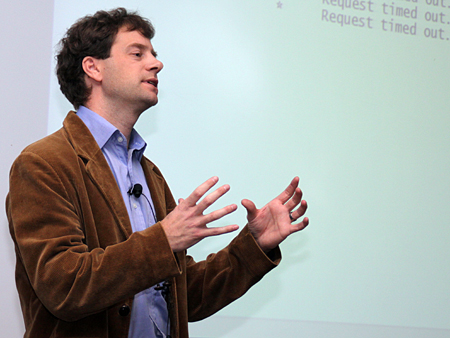

|  | John MacCormick Assistant Professor Department of Mathematics and Computer Science Dickinson College jmac at dickinson dot edu Tome 242 phone 717 245 1626 Office hours: Monday 3:00-4:00, Thursday 9:30-11:00, and by appointment |
John MacCormick has degrees in mathematics from the University of Cambridge and the University of Auckland, and a doctorate in computer vision from the University of Oxford. He was a research fellow at Linacre College, Oxford from 1999-2000, a research scientist at HP Labs from 2000-2003, and a computer scientist with Microsoft Research from 2003-2007. Professor MacCormick joined the faculty of the Department of Mathematics and Computer Science at Dickinson College in Fall 2007. His current research focuses on computer vision, but he also maintains an interest in large-scale distributed computer systems. Currently active research topics include message-passing algorithms for early vision tasks such as stereo vision, and superpixel algorithms for image over-segmentation.